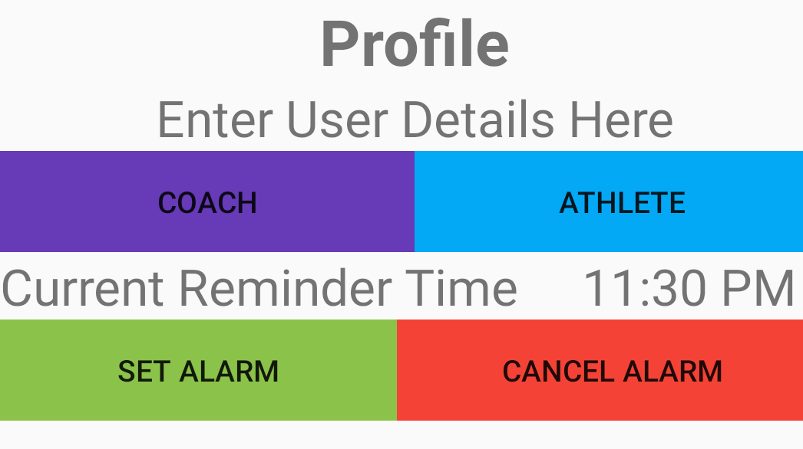
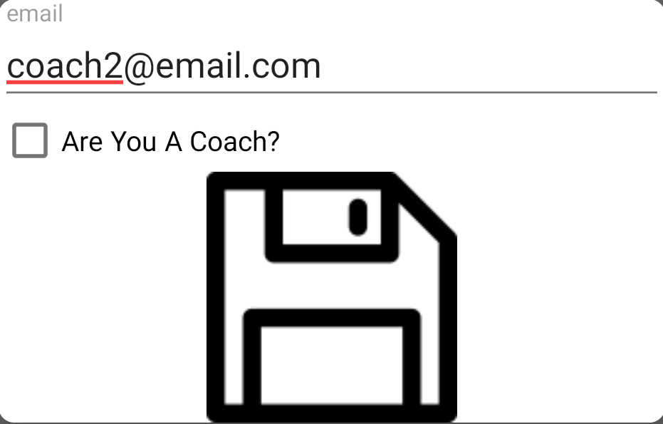
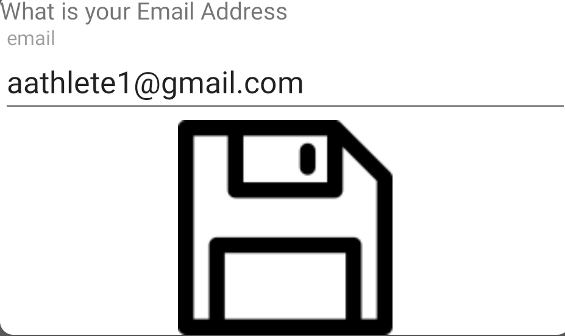

USER GUIDE
Hello and Welcome to the User Guide
Disclaimer: To be Synced with the Coach the Coach should add you first
Disclaimer2:You can also be a Coach and an Athlete
Tap Here To go to profile page
Profile
First the app will check if you have connected to the internet and will give a option if you would like to
go to turn the wifi on? if you don't currently have wifi connection the app will store the data locally and
submit the data when it has connection

First You will need enter you in your user details
Please click the profile icon on the top right hand corner
You will be then followed with this screen

Please fill out the coach form if you are an Athlete put your Coach's email address in
If you are the Coach Put your email address in. If you are the Coach you are now free to go
to your relevant page

If you are an athlete please fill out the athlete form. To sync your Coach's email and your email noted on your
Coach's device must be exactly the same
You can also put a reminder to remind you to input data and this will give a notifcation when you have set the alarm
and also give you a toast reminder to gives you a a gentle reminder
If you are a Coach tap below
Coach's PAGE
If you are a Athlete tap here
Athlete's PAGE